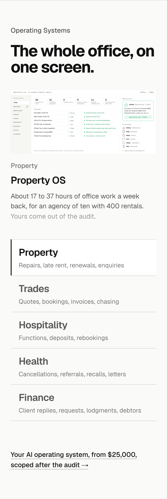
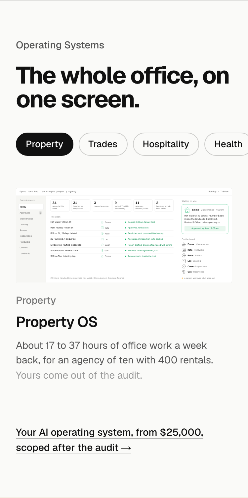
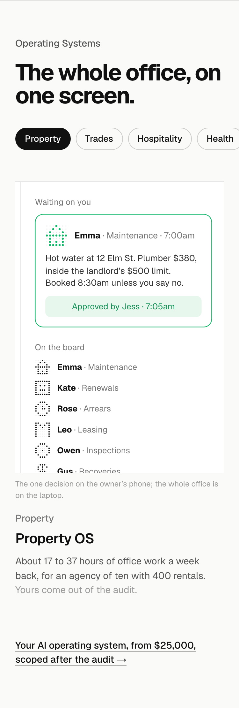
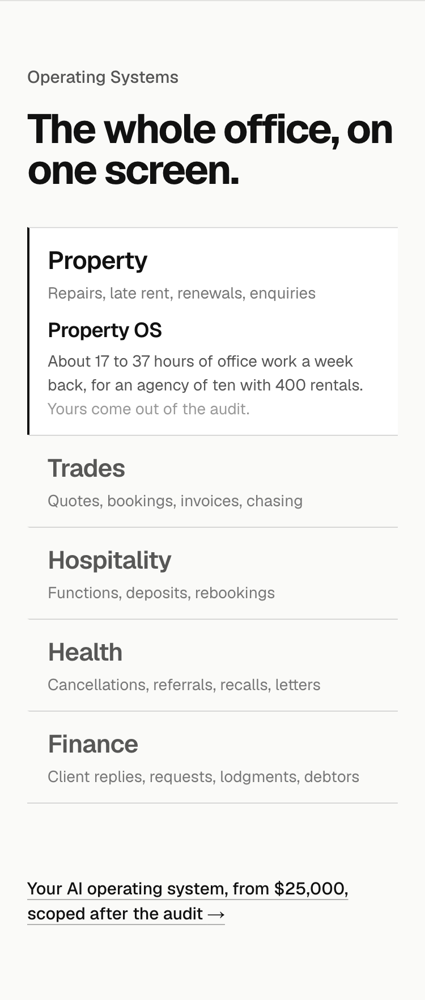

Detail 5 of 5. The section at 375 with the heading, titles, list, line and close as now built. Today stacks the laptop layout; the three options change what a phone shows of a 1184-wide screen.
TodayThe laptop layout stackedThe heading, the whole screen scaled to the phone’s width (unreadable), the title and line, then the five rows and the close. Tall, and the screen is decoration.

1. Pills, then the screenThe industries as a row of pills above the screenThe five industries become a scrolling row of pills under the heading; the screen sits under them with the title and line, then the close. The order a thumb expects: choose, then see. The screen is still small.

2. The one decisionThe screen cropped to the owner’s one callInstead of the whole office, the phone shows the part a phone would show: the approval card and the team, cropped from the screen at a readable size, with the title and line under it and the pills above. The office is on the laptop; the decision is on the phone. Recommended.

3. No screenThe list opens into the lineThe screen goes on phones. The five rows stay, and the active one opens into its title and one-sentence line, then the close. Shortest; nothing moves.
